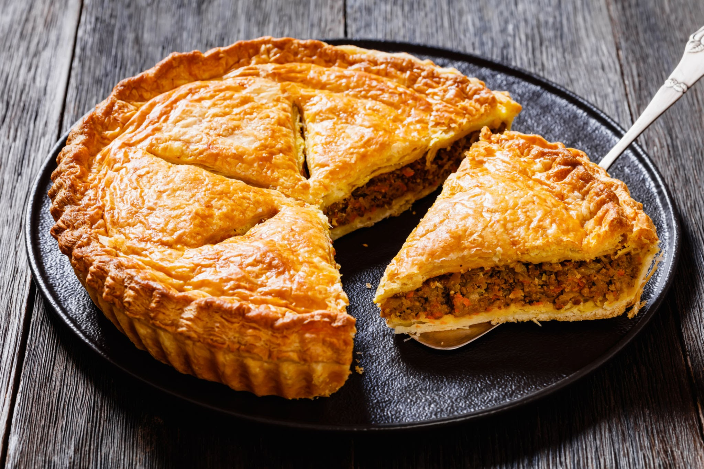

Home
Meat Pies recipe

Description
A meat pie is a savory baked dish consisting of a flaky pastry crust that completely encloses a hearty filling of meat, often mixed with a rich gravy, vegetables, and seasonings. This comfort food is enjoyed globally and can take many forms, from a large, deep-dish pie served in slices (like a steak and kidney pie or French-Canadian Tourtière) to a small, hand-held snack (like the iconic Australian meat pie or a Latin American empanada).
Ingredients:
- Pastry (Crust)
- All-purpose flour.
- Butter or shortening (lard)
- Salt
- Cold water or milk
- Egg (for an egg wash)
- Filling (Meat & Gravy Base)
- Ground or diced meat (most commonly beef, but also pork, lamb, or a combination)
- Onion
- Garlic
- Beef or chicken stock/broth
- Flour or cornstarch (to thicken the gravy)
- Tomato paste or Worcestershire sauce (for depth of flavor)
- Filling (Vegetables & Seasonings)
- Potatoes (diced or mashed, used in some regional recipes like Tourtière)
- Carrots, Celery, Salt and black pepper
- Dried herbs (such as thyme, sage, or mixed herbs)
Steps:
- Prepare the Pie Dough: Mix the dry ingredients (flour, salt, etc.), then cut in the cold fat (butter or shortening) until the mixture is crumbly. After this, add a liquid (cold water/milk) a little at a time until a dough forms. Finally, wrap the dough and refrigerate it to chill (this is essential for a flaky crust).
- Make the Meat Filling: Brown the meat (ground or diced) with the aromatic vegetables (onions, garlic) in a pan. Drain any excess fat. Then, stir in the seasonings (herbs, spices, salt, pepper) and a thickener (flour or cornstarch). After this, add the liquid (broth, water, etc.) and other vegetables (like potatoes or carrots) and bring the mixture to a simmer and cook until the sauce has thickened into a gravy and the meat/vegetables are tender. Finally, remove the filling from the heat and allow it to cool completely before assembling the pie.
- Assemble the Pie(s): Roll out half of the chilled dough and fit it into your pie dish. Pour the cooled filling into the crust. Roll out the remaining dough for the top crust and place it over the filling.
- Prepare for Baking: Cut a few slits (a vent) in the top crust of a large pie, or on each hand pie, to allow steam to escape. Then, brush the top of the pastry with an egg wash (beaten egg with a little water) for a golden, shiny crust.
- Bake:Bake the pie in a preheated oven until the crust is golden brown and the filling is bubbly and hot. Then, allow the pie to cool slightly before slicing and serving.